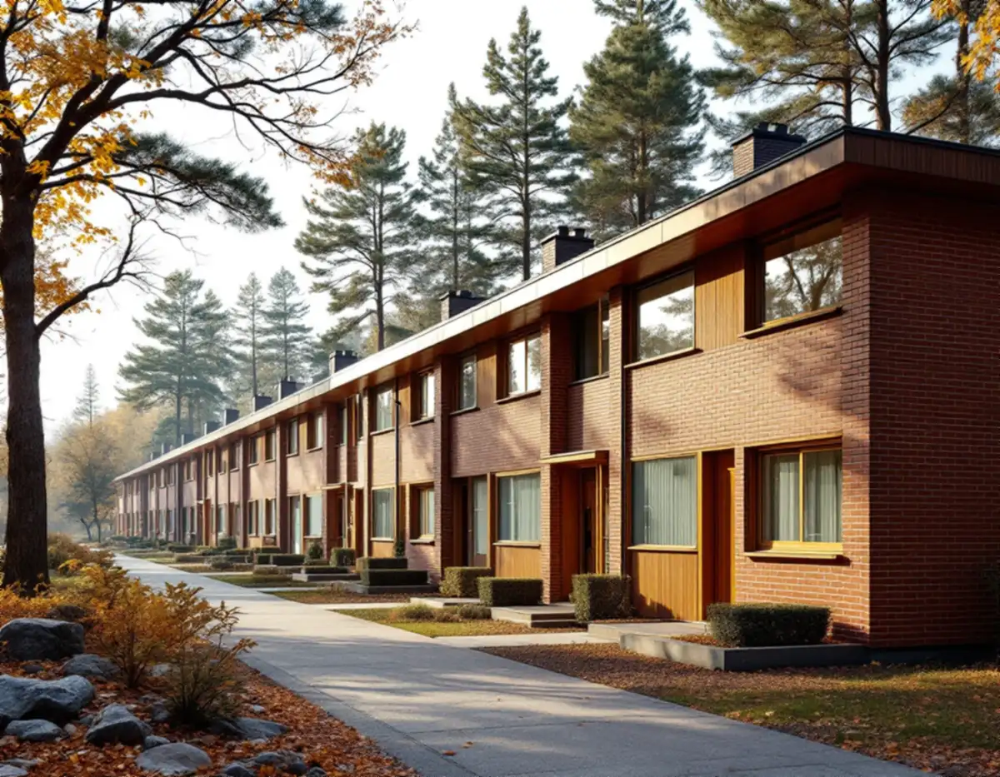
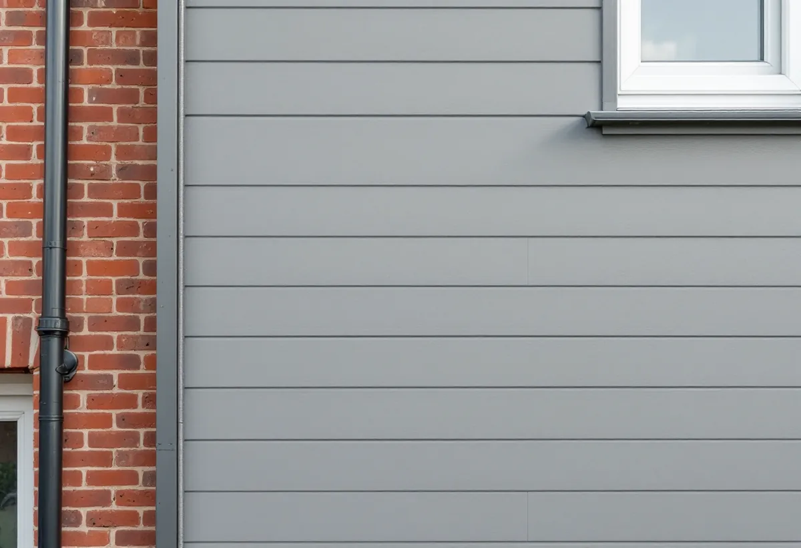

Husgruppen först
Vi tittar på grannhusen och tar reda på husgruppens ursprungliga material och kulör.

När Farsta centrum invigdes 1960 lades flera stora radhusområden i stadsdelens utkanter, och i Fagersjö finns gruppbyggda småhus från de storskaliga stadsdelarnas tid.
Beskriv jobbet kort.
Något blev fel. Kontrollera uppgifterna eller ring 08 12 410 276.
Vi tittar på jobbet på plats innan du får offert.
Du ser vad som ingår och vad det kostar.
Vi drar av ROT direkt och sköter ansökan.
Geal Entreprenad AB, Bromma. Org.nr 559303-7566.

Fasaderna är av tegel, puts, trä och fibercementskivor, och varje husgrupp har sin gemensamma färgsättning. Geal Entreprenad AB renoverar fasader i Farsta, Farsta strand, Fagersjö, Sköndal och övriga Farsta, med gratis platsbesök och skriftligt kostnadsförslag.
Farsta centrum invigdes i oktober 1960 som den första ABC-staden i Söderort, där bokstäverna stod för arbetsplatser, bostäder och centrum. Stadsmuseets skrift om stadsdelen beskriver de 16 våningar höga punkthusen intill centrum, en lägre bebyggelse ju längre ut man kommer och flera stora radhusområden i utkanterna.
Stadens strategi Varsam utveckling av småhus- och villaområden räknar Farsta, Farsta strand och delar av Sköndal till de gruppbyggda småhusområdena i tunnelbanestäderna. Även i Farsta präglades gestaltningen enligt strategin av höga ambitioner. Fasader i rött tegel var vanliga, men det förekom även puts och skivor i fibercement.
Stadens områdesfakta för 2025 räknar 291 äganderätter i småhus i Farsta strand och 418 i stadsdelen Farsta. Varje husägare ansvarar alltså för sin egen fasad, men husen ingår i grupper där ett avvikande material syns tydligt.
Fagersjö hör enligt strategin till de gruppbyggda småhusområdena i storskaliga stadsdelar, tillsammans med bland annat Bredäng, Sätra och Skärholmen. Småhusen där var huvudsakligen radhus och kedjehus, ofta med en blandning av fasadmaterial som tegel, trä och skivor, men med mycket stor enhetlighet inom husgrupperna. Färgsättningen var noga komponerad, och taken var ofta platta eller svagt lutande pulpettak.
Enligt områdesfakta för 2025 finns 198 bostäder i småhus i Fagersjö, och 191 av dem är äganderätter. Strategin påpekar att de gruppbyggda husen står på små tomter, vilket gör utrymmet för större förändringar av det enskilda huset begränsat.
För fasaden innebär det att renoveringen bör utgå från husgruppens material och kulör. Strategins råd till fastighetsägare är att följa de andra byggnaderna i kvarteret och undvika förändringar mot gatan som påverkar den enhetliga bebyggelsen. Om målningen finns mer under målare i Farsta.
Strategin beskriver asbestcement, mer känt som eternit, som ett populärt material i många av tidens områden, och konstaterar att skivorna ofta har bytts mot annat. Boverket skriver att många fasader redan under 1940- och 1950-talen kläddes med cementfiberplattor som innehöll asbest, och att plattorna förbjöds på 1970-talet. De är nästan underhållsfria så länge de är hela, men fibrer kan frigöras om man borrar i dem.
Boverket bedömer att asbest sannolikt finns någonstans i byggnader uppförda 1940–1980, och att provtagning och analys är det enda säkra sättet att veta. Uppgifter kan också finnas i bygglovshandlingarna. Att riva asbesthaltigt material på en fasad kräver enligt Arbetsmiljöverket ett företag med tillstånd, och ansökan ska lämnas åtta veckor innan arbetet börjar.
Efter saneringen byggs fasaden upp igen. Strategin noterar att det i dag finns fasadskivor utan asbest, vilket gör det möjligt att behålla radhusens uttryck. Vi föreslår skivor med liknande format och fogbild, så att huset inte sticker ut i raden.
På en tegelfasad handlar renoveringen främst om fogar och anslutningar. Boverket pekar på att anslutningar mot fönster, dörrar och stuprör behöver tvåstegstätning, och att en enstegstätning med mjukfog kan ha relativt kort livslängd även när den är väl utförd. På putsade partier beror putsbortfall i de allra flesta fall på fukt.
Stockholms stad räknar byte av kulör eller material på fasaden och tilläggsisolering som fasadändringar. För ett en- eller tvåbostadshus krävs normalt inget bygglov, men utökad lovplikt gäller där huset eller området är särskilt kulturhistoriskt värdefullt eller detaljplanen har skyddsbestämmelser. Stadsmuseets klassificeringskarta ger en första indikation, och museet kan göra en bedömning.
I Hökarängen räknar områdesfakta 232 småhus som bostadsrätter. I en bostadsrätt räknar Skatteverket fasaden som gemensam yta, och arbetet ger då inget rotavdrag. Läs mer på sidan om fasadrenovering.
Vi tittar på grannhusen och tar reda på husgruppens ursprungliga material och kulör.
Tegel, fogar, puts, skivor och anslutningar gås igenom.
Äldre fasadskivor provas innan något tas ner.
Sanering, ny beklädnad, fogning och bleck redovisas som egna poster.
Arbetet planeras så att väggen inte står öppen längre än nödvändigt.
Vi går runt huset tillsammans och visar vad som har bytts.
I ett småhus ger byte och reparation av fasader, fasadmålning och tilläggsisolering rotavdrag. Asbestsanering i samband med byggarbetet ger också avdrag, medan provtagning och mätning av asbest inte gör det.
Avdraget är 30 procent av arbetskostnaden, högst 50 000 kr per person och år och högst 75 000 kr tillsammans med rutavdrag. Geal drar avdraget direkt på fakturan.
Om skivorna innehåller asbest, hur stor yta som ska bytas, vilket skivformat som passar husgruppen och hur många fönsteranslutningar som ska göras om. Ett gavelhus har mer fasad än ett mellanhus. Efter ett gratis platsbesök får du ett skriftligt kostnadsförslag.
Puts, panel och tilläggsisolering.
Fasadrenovering i Stockholm →Takbyte, takbesiktning och plåtarbeten.
Takläggare i Farsta →Tallkrogens småstugor och villorna vid Magelungen.
Takrenovering i Farsta →Småstugor, kulturmiljö och gränser.
Attefallshus i Farsta →ABC-staden, radhus och asbest i våtrummet.
Badrumsrenovering i Farsta →En ny bostad i villan.
Byggföretag i Farsta →Tegel, puts, skivor och trädetaljer.
Fasadmålning i Farsta →Småstugor och radhus.
Fönsterbyte i Farsta →Småstugorna i Svedmyra och Sköndal.
Fönsterrenovering i Farsta →Linoleum, plastgolv och klinker i småstugan.
Golvläggare i Farsta →Slipa trägolvet och gå igenom resultatet.
Golvslipning i Farsta →ABC-staden, radhus och villor.
Köksrenovering i Farsta →Småstugor, ädelputs och radhus i Söderort.
Målare i Farsta →Skorstensbeslag och plåttak i Farsta.
Plåtslagare i Farsta →Förråd, gäststuga och skärmtak vid småstugan.
Snickare i Farsta →Radhusen, längan och föreningen.
Takbyte i Farsta →Tapet i 1960-talets lägenheter.
Tapetsering i Farsta →Småstugorna och trädgårdssidan.
Tillbyggnad i Farsta →Småstugorna och typritningarna.
Totalrenovering i Farsta →Eller ring 08 12 410 276, mån–fre 08–17.
Beskriv jobbet kort.
Något blev fel. Kontrollera uppgifterna eller ring 08 12 410 276.